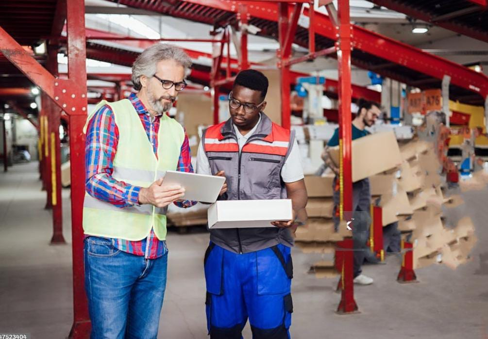

Année universitaire : 2024–2025
Formation : Licence 3 Sociologie

Mar Ndir
Tuteur universitaire : VAYRE JEAN-SEBASTIEN
Année universitaire : 2024–2025
Formation : Licence 3 Sociologie
Tuteur universitaire : VAYRE JEAN-SEBASTIEN
Je tiens à exprimer ma profonde gratitude à toutes les personnes qui ont contribué au bon déroulement de mon stage.
Tout d’abord, je tiens à exprimer ma sincère gratitude à Monsieur Guillaume Jaouron, qui m’a accueilli au sein de cette entreprise et m’a offert l’opportunité de découvrir concrètement le domaine du management et de la vente. Son accompagnement, ses conseils avisés et sa disponibilité ont été essentiels à ma progression tout au long de cette expérience.
Je remercie également l’ensemble de l’équipe du magasin pour leur accueil chaleureux, leur esprit d’équipe et leur soutien quotidien. Grâce à eux, mon intégration a été fluide et enrichissante, tant sur le plan humain que professionnel.
Enfin, je remercie mes enseignants et encadrants académiques pour leurs conseils et leur suivi tout au long de ce stage.
Ce rapport de stage a pour objectif de retracer mon expérience au sein de l'entreprise Intermarché super Cagnes-sur-mer où j’ai effectué un stage d’un mois, du 1er au 30 avril 2025.
Ce stage, obligatoire dans le cadre de ma formation, avait pour but de me permettre d’acquérir des compétences pratiques en lien avec mes études sociologiques et de mon projet professionnel.
Au cours de ce stage, j’ai eu l’opportunité de participer à divers projets et de travailler en étroite collaboration avec des professionnels expérimentés. Ce rapport détaillera les différentes missions qui m’ont été confiées, les compétences que j’ai développées ainsi que les enseignements tirés de cette expérience.
Intermarché Super Cagnes-sur-Mer est une enseigne de grande distribution appartenant au groupement Les Mousquetaires. Situé au 105 avenue des Alpes, dans le quartier des Malvans à Cagnes-sur-Mer, ce point de vente a vu le jour le 24 mars 2000. Le 1er juillet 2024, la société Calao 145 a acquis le commerce voisin à 1-5 chemin des Vallières, à Cagnes-sur-Mer. Ce magasin, anciennement exploité sous l’enseigne Casino, a été rebrandé sous l’enseigne Intermarché. Ainsi, bien que la société soit récente et créée en 2024, elle a rapidement pris possession et exploite désormais le magasin Intermarché de Cagnes-sur-Mer.
Intermarché Super Cagnes-sur-Mer se distingue par sa proximité avec les habitants, son engagement en faveur d’un approvisionnement plus responsable, ainsi qu’une politique de prix accessibles. Grâce à la diversité de ses produits et à la qualité de son service, il s’est progressivement imposé comme un acteur clé de la distribution alimentaire dans la région.

Intermarché super Cagnes-sur-Mer s’engage à proposer des produits de qualité au meilleur prix, tout en répondant aux attentes d’une consommation plus responsable. L’enseigne cherche aussi à anticiper les besoins futurs des clients grâce à des services innovants et des partenariats locaux.
Les valeurs fondamentales de cette entreprise reposent sur la proximité, la qualité et l’engagement. L’enseigne accorde une importance particulière à la satisfaction client, au respect de l’environnement et au soutien des producteurs locaux. Ces valeurs se traduisent au quotidien dans le travail des équipes, à travers un service attentif, des produits sélectionnés avec soin, et une démarche responsable ancrée dans la culture de l’entreprise.
Durant mon stage, j’ai été affectée au département Management, plus précisément au rayon traditionnel, et en particulier au rayon marée, sous la supervision de Guillaume Jaoum. Mes principales missions étaient les suivantes :
réception des produits, vérification de leur fraîcheur, mise en rayon sur l’étalage en respectant les normes d’hygiène et de sécurité alimentaire.
accompagnement des clients dans leurs choix, informations sur les produits (origine, méthode de préparation, cuisson, etc.), et vente au détail.
suivi des niveaux de stock, anticipation des besoins en commandes, et réduction des pertes en optimisant la rotation des produits.
nettoyage et désinfection réguliers du matériel et de la zone de vente conformément aux procédures en vigueur.
J'ai appris à organiser les plannings de l'équipe en tenant compte des besoins du rayon, des disponibilités de chacun, et des temps forts de l'activité (week-ends, promotions, etc.).
J'ai participé à la gestion des commandes en anticipant les besoins du rayon, en fonction de la demande client et des prévisions de ventes, tout en évitant les surstocks ou ruptures.
J'ai été impliquée dans les inventaires réguliers pour suivre les niveaux de stock, identifier les pertes éventuelles, et ajuster les commandes en conséquence.
J'ai appris à analyser les résultats du rayon, à suivre l'évolution du chiffre d'affaires jour après jour, et à comprendre les facteurs qui influencent les ventes.
J'ai été amenée à comparer les résultats du rayon avec les objectifs fixés par la direction, à repérer les écarts et à réfléchir à des actions correctives.
J'ai observé les stratégies des concurrents (prix, promotions, mise en avant des produits) pour identifier des pistes d'amélioration et adapter notre offre en conséquence.
J'ai réfléchi à plusieurs actions pour développer les ventes, comme la mise en avant de certains produits, les dégustations, ou la création de promotions ciblées.
J'ai appris à écouter les attentes des clients, à répondre à leurs questions avec précision et courtoisie, et à adapter la présentation du rayon pour rendre l'expérience d'achat plus agréable.
Chaque mission est une opportunité d'apprentissage, permettant de mieux comprendre les enjeux du management et les techniques de vente en grande distribution.
Au cours de mon stage au sein du rayon marée, j'ai été pleinement intégrée à l'équipe du département Management, sous la responsabilité de Guillaume Jaouron. Les missions qui m'ont été confiées ont été variées et formatrices, couvrant à la fois des aspects opérationnels, commerciaux et stratégiques. Voici une analyse détaillée de ces différentes missions et des enseignements que j'en ai tirés :
Cette mission m'a permis d'apprendre à gérer un rayon de manière autonome : de la réception des produits jusqu'à leur mise en rayon. J'ai pris conscience de l'importance de respecter les normes strictes d'hygiène et de sécurité alimentaire, particulièrement cruciales dans le secteur des produits frais.
Analyse : J'ai développé ma rigueur, mon sens de l'organisation et ma réactivité. J'ai également appris à valoriser les produits pour stimuler les ventes, en veillant à l'aspect visuel et à l'attractivité du rayon.
Le contact direct avec les clients a été une composante essentielle de mon stage. J'ai appris à écouter, conseiller, et accompagner les clients dans leurs achats en leur apportant des informations sur les produits (origine, préparation, conservation, etc.).
Analyse : Cette mission a renforcé mes compétences relationnelles, ma capacité d'adaptation face à des profils de clients très différents, et m'a sensibilisée à l'importance de la satisfaction client comme levier fondamental de fidélisation et de réussite commerciale.
En participant au suivi des stocks et à l’anticipation des commandes, j’ai appris à gérer les flux de produits de manière optimisée. L’objectif était d’éviter les ruptures, de limiter les pertes et de maintenir une offre attractive.
Analyse : J’ai développé une vision plus stratégique de la gestion des produits et acquis des compétences en logistique, en prévision des ventes et en gestion des approvisionnements.
Le respect des règles d’hygiène fait partie intégrante du travail au rayon marée. J’ai été chargée de nettoyer et désinfecter régulièrement le matériel et les surfaces de vente.
Analyse : Cette mission m’a appris à travailler dans le respect strict des procédures de sécurité alimentaire, et à intégrer des gestes d’hygiène dans ma routine professionnelle quotidienne.
La participation à la création des plannings de l’équipe m’a sensibilisée à la gestion du temps, à l’équilibre des ressources humaines et à la nécessité d’une bonne coordination des effectifs selon l’activité du magasin.
Analyse : J’ai appris à prendre en compte plusieurs contraintes (disponibilités, compétences, périodes de forte affluence) et à contribuer à une meilleure organisation du travail.
J'ai été impliquée dans le suivi du chiffre d'affaires quotidien et hebdomadaire du rayon, ainsi que dans l'analyse des écarts par rapport aux objectifs.
Analyse : Cette mission m'a permis de mieux comprendre les indicateurs de performance, leur suivi régulier, et leur rôle dans la stratégie commerciale. J'ai développé un regard plus analytique sur la gestion d'un rayon.
En observant la concurrence, j'ai identifié des idées pour améliorer les performances du rayon marée, comme la mise en avant de certains produits ou l'amélioration de l'accueil client.
Analyse : Cette mission a stimulé ma créativité, ma capacité à proposer des solutions concrètes, et m'a sensibilisée à l'importance de rester compétitif dans un secteur très concurrentiel.
L'ensemble de ces missions m'a permis d'acquérir une vision globale du fonctionnement d'un rayon, d'allier des tâches techniques à des réflexions plus stratégiques, et de renforcer mes compétences humaines et professionnelles. Ce stage m'a également permis de gagner en autonomie, en rigueur et en assurance, et m'a confortée dans mon choix de poursuivre une carrière dans le domaine du commerce et de la distribution.
D'un point de vue personnel, ce stage chez Intermarché Super Cagnes-sur-Mer m'a apporté une expérience enrichissante et transformative.
Ce stage a été une expérience particulièrement enrichissante sur le plan personnel. Il m'a permis de mieux comprendre mes capacités, mes points forts et les domaines dans lesquels je peux encore progresser. Au fur et à mesure des missions, j'ai constaté plusieurs évolutions notables dans ma manière de travailler et d'interagir avec les autres.
Les échanges avec mes collègues ont été particulièrement formateurs. J'ai appris à collaborer efficacement, à écouter activement et à prendre en compte des points de vue différents, ce qui a renforcé ma communication et mon esprit d'équipe. Le soutien de mes supérieurs, à travers leurs conseils et retours constructifs, m'a permis de mieux comprendre mes axes de progression et de m'améliorer tout au long du stage.
Chaque nouvelle expérience est une chance de découvrir des forces insoupçonnées et de grandir avec joie et confiance.
L’une des plus grandes évolutions que j’ai observée en moi-même est mon gain d’autonomie. Au fil du temps, j’ai gagné en confiance et en réactivité, et j’ai appris à gérer les tâches de manière plus indépendante. J’ai également pris des initiatives, comme proposer des améliorations dans l’organisation du rayon et l’accueil des clients.
Travailler dans un environnement dynamique m’a permis de développer mes compétences en gestion du stress. J’ai appris à gérer plusieurs tâches en même temps tout en maintenant un haut niveau de performance, notamment pendant les périodes de forte affluence, où j’ai su rester calme et efficace pour répondre aux besoins des clients.
Mon stage m’a permis de renforcer ma capacité à m’adapter rapidement à des situations nouvelles, que ce soit dans les relations avec les clients ou dans la gestion des stocks, en prenant des décisions appropriées en fonction des circonstances.
Travailler au sein d’une équipe dynamique a renforcé ma capacité à collaborer et à comprendre l’importance de la communication et de la coordination au sein d’un groupe. J’ai pris conscience que la réussite d’un projet ou d’une mission repose largement sur le travail collectif et la synergie entre les membres de l’équipe.
Ce stage a été une expérience particulièrement enrichissante sur le plan personnel. Il m’a permis de mieux comprendre mes capacités, mes points forts et les domaines dans lesquels je peux encore progresser. Au fur et à mesure des missions, j’ai constaté plusieurs évolutions notables dans ma manière de travailler et d’interagir avec les autres.
Grâce aux différentes missions, j’ai renforcé mes compétences en gestion des stocks, mise en rayon, suivi du chiffre d’affaires et élaboration de plannings, ce qui m’a permis de comprendre l’importance des détails dans la gestion d’un rayon.
Le contact avec la clientèle m’a permis de gagner en aisance dans le conseil, d’être plus à l’écoute et persuasive, tout en développant une meilleure compréhension des leviers commerciaux comme la présentation des produits et la fidélisation.
Le suivi des performances et la veille concurrentielle m’ont permis de mieux comprendre les enjeux stratégiques d’un rayon et d’identifier les actions à mener pour améliorer les résultats.
L’élaboration des plannings et la gestion des stocks m’a appris à mieux organiser mon travail, à anticiper les besoins et à rester efficace même sous pression et avec des délais courts.
Mon expérience au rayon marée m’a appris à respecter des procédures strictes pour garantir un environnement de travail sain, essentiel en distribution alimentaire.

Au-delà des compétences techniques, ce stage a été un véritable terrain d’apprentissage sur le plan humain. J’ai appris à mieux me connaître, à renforcer mes points forts et à travailler sur mes axes d’amélioration. Mon développement personnel s’est ainsi intensifié, et je suis désormais plus préparée à affronter de nouveaux défis professionnels.
Au cours de mon stage au sein du rayon marée d’Intermarché Super Cagnes-sur-Mer, j’ai eu l’opportunité de développer un ensemble de compétences variées, tant sur le plan technique qu’humain, qui me seront précieuses pour la suite de mon parcours professionnel.
J’ai renforcé ma maîtrise de plusieurs aspects opérationnels essentiels dans un rayon : la gestion des stocks, la mise en rayon des produits, le suivi du chiffre d’affaires et des objectifs, ainsi que l’élaboration des plannings. Ces compétences m’ont permis d’assurer un fonctionnement optimal du rayon tout en respectant les exigences de qualité.
Travailler directement avec la clientèle a développé mon aisance à conseiller, à informer, et à fidéliser. J’ai appris à valoriser les produits en mettant en place des actions commerciales efficaces et en utilisant des stratégies de fidélisation adaptées aux besoins des clients. Cette expérience m’a aussi enseigné à être persuasive et à écouter attentivement les besoins des clients pour répondre au mieux à leurs attentes.
Mon expérience chez Intermarché Super Cagnes-sur-Mer a renforcé mon désir de poursuivre une carrière dans la grande distribution. À moyen terme, je souhaite approfondir mes études en management commercial, en me spécialisant dans la gestion de rayon et la stratégie de vente. À long terme, mon objectif est d’évoluer vers des postes à responsabilités, tels que manager de rayon ou responsable magasin, afin de mettre en pratique mes compétences stratégiques, commerciales et humaines.
Cette immersion dans le secteur du management et de la vente m’a permis de mettre en pratique les connaissances acquises lors de ma formation académique. J’ai également développé de nouvelles compétences directement liées au terrain, essentielles pour ma future carrière dans le commerce et la gestion.
Les compétences et les connaissances acquises durant ce stage seront des atouts précieux pour ma carrière future. Cette expérience représente une étape importante de mon parcours professionnel, et je suis enthousiaste à l’idée de mettre à profit cet apprentissage dans mes projets à venir.
Les missions variées et les échanges avec des professionnels expérimentés m’ont permis de renforcer ma confiance en moi, mon autonomie, ainsi que mes compétences en communication et en travail d’équipe. Ce stage a également confirmé mon intérêt pour les métiers du commerce et du management et a consolidé mon ambition de poursuivre une carrière dans ce domaine.
Je remercie sincèrement l’équipe Intermarché Super Cagnes-sur-Mer pour leur accueil chaleureux et leur encadrement bienveillant.
“Chaque pas que nous faisons aujourd'hui, façonne le paysage de notre avenir.”
Les rêves d’aujourd’hui sont les réalités de demain, nourris par notre détermination.

L’idée d’adapter la stratégie pour le lancement du filet de merlan à l’Intermarché Super Cagnes-sur-Mer a été proposée, ciblant les attentes des clients avec des produits, des promotions et des conseils personnalisés. Cette approche a renforcé la fidélisation et la satisfaction, tout en se distinguant de la concurrence locale.
L’analyse de marché a permis d’évaluer la demande, la concurrence et les opportunités pour le lancement du filet de merlan. La segmentation a ciblé les consommateurs en fonction de critères démographiques, géographiques et comportementaux. Cette approche a personnalisé l’offre, maximisé la fidélisation et distingué le produit de la concurrence.

L’étude de notoriété du filet de merlan à l’Intermarché Cagnes-sur-Mer a mesuré la connaissance et la perception du produit auprès des consommateurs. Elle a permis d’identifier son niveau de visibilité et de comprendre les attentes des clients. Les résultats ont été utilisés pour ajuster les actions marketing et renforcer sa présence en magasin.